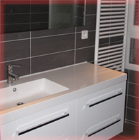
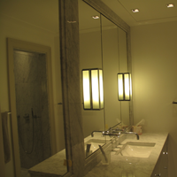
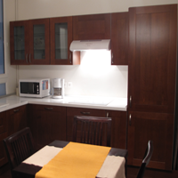
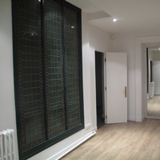
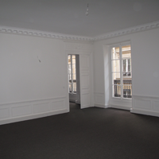
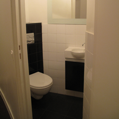

KA CONSTRUCTIONS vous propose une offre de services sur mesure
et globale avec une qualité maximale dans le respect des budgets et plannings établis.
Qui sommes-nous ?
KA Constructions est une entreprise de rénovation et de réhabilitation, spécialisée notamment dans l’aménagement de bureaux et d’espaces tertiaires. Situés en Ile de France, nous intervenons sur toute la région. KA Constructions collabore avec KA Archi : entreprise d’architecture à laquelle nous confions l’étude et la conception des projets. Fort d’une expérience de 30 ans, notre architecte vous accompagne dans les phases de conception, réalisation et livraison. Il assure la supervision de l’ensemble des travaux et sa qualité d’exécution. Notre équipe d’artisans, experts dans leurs métiers du second œuvre en Ile de France, fournissent un travail sérieux et de qualité. Elle prend en charge tout ou une partie de votre projet d’aménagement.
Nos domaines d’intervention
Nos domaines d’intervention regroupent les aménagements suivants
- Faux plafond
- Cloison
- Revêtement de sol
- Peinture
- Electricité
- Plomberie
- Maçonnerie et menuiserie
- Stores et occultations
- Signalétique intérieure et extérieure
- 
- 
- 
- 
- 
- 